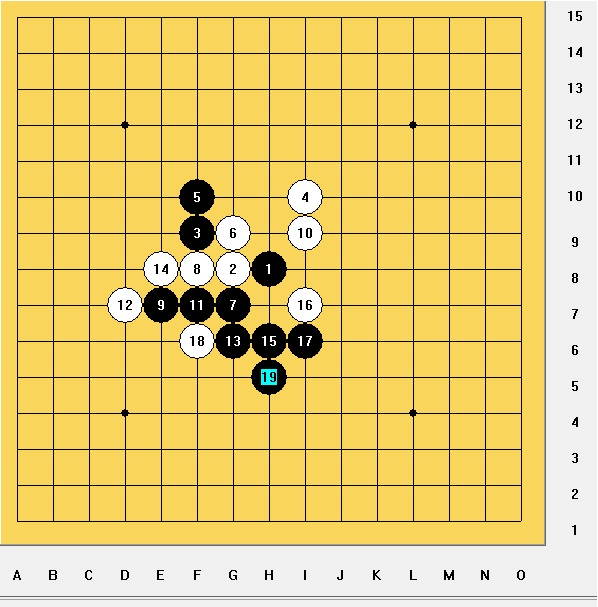
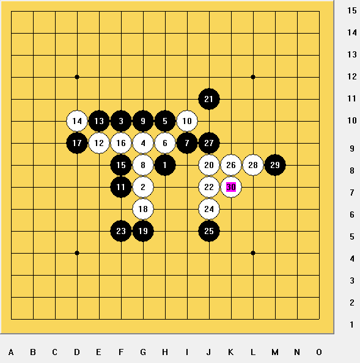

棋心愉悦7-31对抗赛活动事记 - 黑白五子相争，强强团队PK
首页
★棋心愉悦★
#1 棋心愉悦7-31对抗赛活动事记 - 黑白五子相争，强强团队PK 作者：天真o邪 发表时间：2010-8-4 14:13:35
之前本想在7-31去参加广州那边的常规五子棋活动的，那时发现到好像很多大师要去，棋心这边也有很多高手跟MM去玩，灵机一触就提议搞一个PK赛。
广东连珠的水鸟他还真厉害，想到挂着强强团队PK的名号，还在各大五子棋网站宣传了，广东连珠VS棋心愉悦，挺有看头似的，而且我们还有强大的MM群众，相信这次活动一定很好玩。我们棋心的还计划晚上吃饭唱K，第二天就一起行白云山去，真是令人兴奋的活动。
#2 Re:黑白五子相争，强强团队PK - 棋心愉悦7-31对抗赛活动事记 作者：天真o邪 发表时间：2010-8-4 14:30:26

山口规 黑 韦振强VS龙梓锋 白 黑胜

RIF规 黑 龙梓锋VS韦振强 白 白胜
［ 淡月疏星 于 2010-9-11 8:25:56 时奖励此帖[金币加 100 威望加1］
#3 Re:棋心愉悦7-31对抗赛活动事记 - 黑白五子相争，强强团队PK 作者：掌棋宣传员 发表时间：2010-8-4 15:08:28
好邪恶的13手...
#4 Re:棋心愉悦7-31对抗赛活动事记 - 黑白五子相争，强强团队PK 作者：两道 发表时间：2010-8-4 15:15:40
缘MM越来越强大！
#5 Re:棋心愉悦7-31对抗赛活动事记 - 黑白五子相争，强强团队PK 作者：屏蔽 发表时间：2010-8-4 15:37:08
去年和黄金贤下的时候他还告诉我（第一盘的前十手的形状）是对攻的局面，今儿一查，果然必败了。 ［ 掌棋宣传员 于 2010-8-4 21:20:12 时花20金币送鲜花一朵］
#6 Re:棋心愉悦7-31对抗赛活动事记 - 黑白五子相争，强强团队PK 作者：萱萱 发表时间：2010-8-4 19:36:33
 《C大调》是我坐在你旁边放的……
《C大调》是我坐在你旁边放的……
［ 有志青年 于 2010-8-4 19:43:05 时奖励此帖[金币加 20 威望加1］
#7 Re:棋心愉悦7-31对抗赛活动事记 - 黑白五子相争，强强团队PK 作者：岑小鱼 发表时间：2010-8-5 18:35:32
朱其说:让大家担心了，真是抱歉。
我还好，这几天在广州同学这里，手机没电就一直没用。
今晚的火车回长沙。
#8 Re:棋心愉悦7-31对抗赛活动事记 - 黑白五子相争，强强团队PK 作者：棋心愉悦淡定 发表时间：2010-9-28 19:37:03

 太有想象力了吧，还好那天没听你说，不然。。。
太有想象力了吧，还好那天没听你说，不然。。。